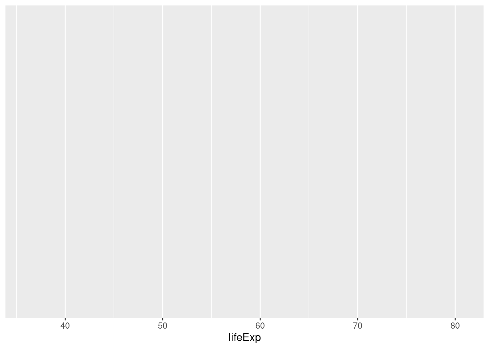
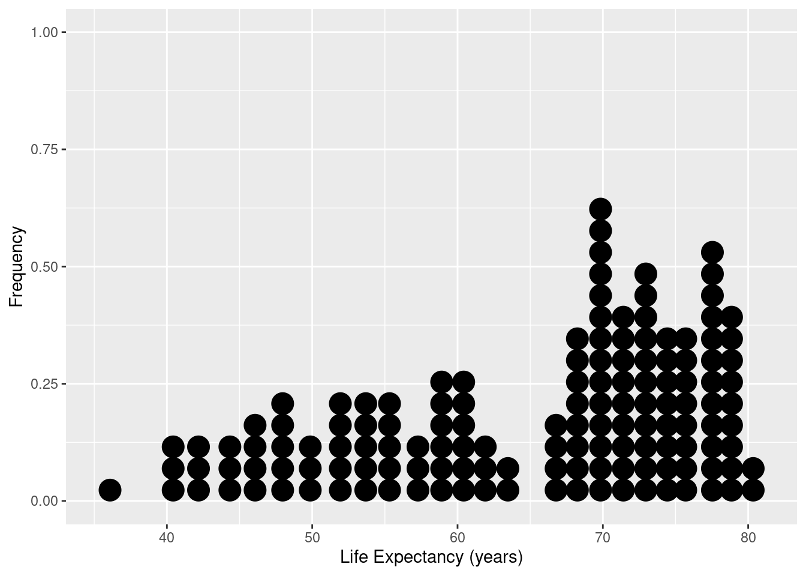
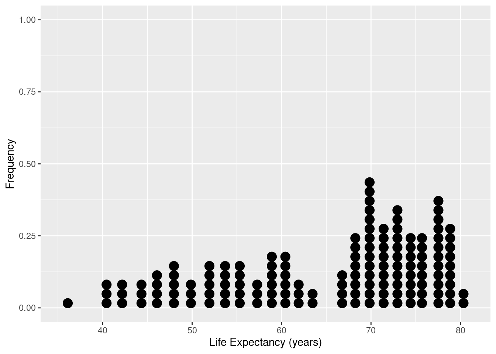
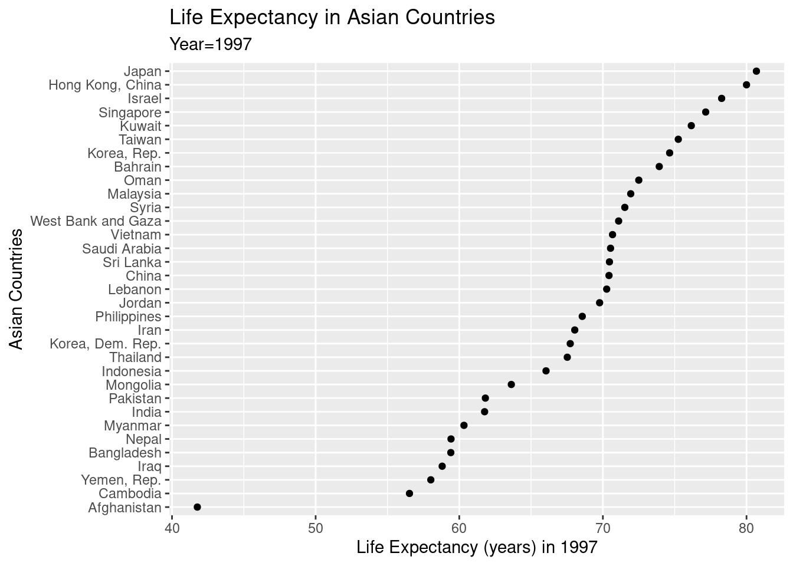
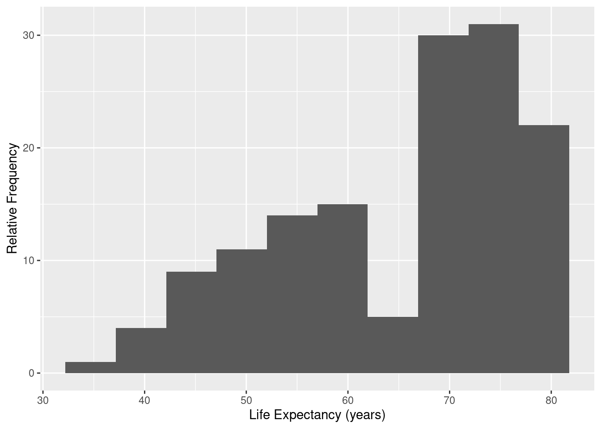

Chapter 5 Univariate Graphical Displays
In this section we will show examples of how to create graphical displays of a single variable - with examples for both quantitative and categorical variables. In each example, the first line creates the dataset to be graphed - followed by a command making the display. We will focus on graphical displays made by functions in the ggplot2 family - that is, the ggplot2 package which is also part of the tidyverse family of functions. If tidyverse is loaded, ggplot2 functions will work without explicitly loading the ggplot2 package.
5.1 Overview of ggplot
The ggplot2 package uses the ggplot command - and builds a graphical display in steps and layers. We always start with the ggplot command which typically has two basic elements: a dataset to be used, and a list of mappings aes that is used to connect dataset variables to aspects of the plot like the vertical axis, horizontal axis, or perhaps the size of a point.
The kind of object being displayed is called a geom, and a plot can have several geoms, and they are added to a display in layers - connected by a + sign.
5.2 A Quantitative Variable
5.2.1 Dotplot
The next block of code takes the gapminder dataframe and “pipes” (%>%, a pipeline like plumbing) the data through a filter so that only data from year 1997 flows through to define the new dataset named ds. The ggplot command uses dataset ds, and variable x life expectancy. The next example shows what using only the ggplot command produces an empty graphical region that is awaiting further instructions:

Now we use additional code to place the dotplot in the existing graphical region. In ggplot graphics we make graphical objects with a geom function - here a dotplot so we use geom_dotplot() to produce the dotplot specified using the variable mappings in the aesthetics command aes in the ggplot command.
ds <- gapminder %>% filter(year==1997)
#
ggplot(data=ds, mapping=aes(x=lifeExp)) +
geom_dotplot() +
xlab("Life Expectancy (years)") + ylab("Frequency")Here we change the default size for the dots.
ds <- gapminder %>% filter(year==1997)
#
ggplot(data=ds, mapping=aes(x=lifeExp)) +
geom_dotplot(dotsize=0.70) +
xlab("Life Expectancy (years)") + ylab("Frequency")5.2.1.1 Dotplot with observations identified and ordered
Here we produce a display so that life expectancy is displayed for each country in Asia, and the values are ordered.
ds <- gapminder %>% filter(continent=="Asia",year==1997)
#
ggplot(data=ds, mapping=aes(x=lifeExp, y= reorder(country,lifeExp))) +
geom_point() +
xlab("Life Expectancy (years) in 1997") +
ylab("Asian Countries")
Notice that in the next example we simply pipe the modified dataset into the first argument of the ggplot command so that there is no need to save the modified dataset to make the display. In the next block we pipe the modified dataset directly inside the ggplot command to automatically replace the first argument.
gapminder %>% filter(continent=="Asia",year==1997) %>%
ggplot(data=., mapping=aes(x=lifeExp, y= reorder(country,lifeExp))) +
geom_point() +
xlab("Life Expectancy (years) in 1997") +
ylab("Asian Countries")
5.2.2 Histogram
This code block is similar to the dotplot commands, but the geom_histogram function controls the bin width in units of the x variable - in this case 5 years.
gapminder %>% filter(year==1997) %>%
ggplot(data=.,mapping=aes(x=lifeExp)) +
geom_histogram(binwidth=5) +
xlab("Life Expectancy (years)") +
ylab("Relative Frequency")
Here we change the binwidth:
gapminder %>% filter(year==1997) %>%
ggplot(data=.,mapping=aes(x=lifeExp)) +
geom_histogram(binwidth=2.5) +
xlab("Life Expectancy (years)") +
ylab("Relative Frequency")
Here we change the number of bins, notice the data argument is replaced by the piped data:
gapminder %>% filter(year==1997) %>%
ggplot(mapping=aes(x=lifeExp)) +
geom_histogram(bins=12) +
xlab("Life Expectancy (years)") +
ylab("Relative Frequency")
5.2.3 Density Plot
Density plots produces a smoothing of a histogram to display the distribution.
ds <- gapminder %>% filter(year==1997)
#
ggplot(data=ds, mapping=aes(x=lifeExp)) +
geom_density() +
xlab("Life Expectancy (years)") +
ylab("Density")The adjust option controls the amount of smoothing relative to a default value of 1. A smaller value gives less smoothing (more responsive line to small changes in the data distribution), and larger values will make a smoother curve that is less sensitive to the data pattern.
5.2.4 Boxplot
The boxplot display really needs only a single quantitative variable (here life expectancy) for the numeric axis. However, the other axis looks better with some
sort of factor variable - so here we supply the year for the display, where the quantitative variable year has temporarily being used as a category/factor variable by being processed by the factor function before used in the graphic:
ds <- gapminder %>% filter(year==1997)
#
ggplot(data=ds, mapping=aes(x=factor(year),y=lifeExp)) +
geom_boxplot() +
labs(x="Year",y="Life Expectancy (years)")# Change orientation
ggplot(data=ds, mapping=aes(x=factor(year),y=lifeExp)) +
geom_boxplot() +
coord_flip() +
labs(x="Year",y="Life Expectancy (years)")Now we overlay points on top of the boxplot display. Note the geom_jitter that overlays the points has an argument alpha=0.5 signifying a slightly transparent plot symbol. An alpha value of 1 means the plot symbol is opaque, and a value of 0 is completely transparent. Careful use of alpha in large datasets will enable the analyst to correctly perceive point density. Without using a smaller value of alpha the plot may be one large blob of ink - making it difficult to judge the density of points in the display.
ds <- gapminder %>% filter(year==1997)
#
ggplot(data=ds, mapping=aes(x=factor(year),y=lifeExp)) +
geom_boxplot(outlier.shape = NA) +
geom_jitter(alpha=0.5, width=0.35) +
labs(x="Year",y="Life Expectancy (years)")
If the dataframe has only one quantitative variable, we can make a character variable called “sample”, then this code will produce an acceptable display.
ds <- gapminder %>% filter(year==1997) %>%
mutate(sample="Sample")
#
ggplot(data=ds, mapping=aes(x=sample,y=lifeExp)) +
geom_boxplot(outlier.shape = NA) +
geom_jitter(alpha=0.5, width=0.35) +
labs(x="",y="Life Expectancy (years)")
5.3 Displays of a Categorical Variable
5.3.1 Bar Graph
ds <- gapminder %>%
filter(year==1997) %>%
group_by(continent)
# Frequency of countries in each continent in 1997.
ggplot(data=ds, mapping=aes(x=continent)) +
geom_bar() +
labs(x="Continent", y="Frequency")#
ggplot(data=ds, mapping=aes(x=continent)) +
geom_bar(width=0.5,fill="blue") +
labs(title="Countries in Each Continent",
subtitle = "Year = 1997",
caption = "Gapminder data",
x="Continent",
y="Frequency") +
theme(axis.text.x = element_text(angle=45,vjust = 0.6))Bar graph with percentages on vertical axis.
ds <- gapminder %>%
filter(year==1997) %>%
group_by(continent) %>%
summarise (n = n()) %>%
mutate(pct = 100*n / sum(n))
#
head(ds)## # A tibble: 5 x 3
## continent n pct
## <fct> <int> <dbl>
## 1 Africa 52 36.6
## 2 Americas 25 17.6
## 3 Asia 33 23.2
## 4 Europe 30 21.1
## 5 Oceania 2 1.41#
ggplot(data=ds, mapping=aes(x = continent, y = pct)) +
geom_bar(stat = "identity") +
xlab("Continent") + ylab("Percentage")# change order of continents in decreasing frequency order
ggplot(data=ds, mapping=aes(x = reorder(continent, -pct), y = pct)) +
geom_bar(stat = "identity") +
xlab("Continent") + ylab("Percentage")Sometimes it is more convenient to have the bars oriented horizontally. Notice we set up the aesthetic mappings as usual and then flip the axes with the coord_flip command.
ds <- gapminder %>%
filter(year==1997) %>%
group_by(continent) %>%
summarise (n = n()) %>%
mutate(pct = 100*n / sum(n))
#
ggplot(data=ds, mapping=aes(x = reorder(continent, pct), y = pct)) +
geom_bar(stat = "identity") +
coord_flip() +
xlab("Continent") + ylab("Percentage")You can produce a similar display using geom_col on the summarized data tibble.
5.3.2 Pie Graph
Pie graphs are not recommended, but the code needed to make one is given here.